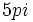
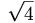

De: La Frikipedia, la enciclopedia extremadamente seria.
De: La Frikipedia, la enciclopedia extremadamente seria. De: La Frikipedia, la enciclopedia extremadamente seria.
| De la serie Elementos químicos: | ||
|
| ||
| Nombre oficial: | Helicóptero y Helicótero | |
| Otros nombres: | Compresa con hélices | |
| Serie alquímica: | Gases plebeyos | |
| Descubridor: | Leonardo Di Caprio | |
| Color en tabla: | Moco pistacho | |
| Presente en: | Máquinas voladoras | |
| Usos: | Malignos, malignos | |
| Estado: | Cáquido | |
| Peso kg/puñao: | Entre 0 y 1.000 cachifloides | |
| Estructura: | De hueso de aceituna | |
| Abstracción: | 0º Melvin | |
| Humungoso: |  radianes | |
El helicóptero, también conocido entre las gentes de bien como helicótero o helicopotero, es el elemento  de la tabla periódica, y, a parte de una técnica de hacer hijos de éxito practicada por Diox (versión maligna de Dios), es un arma de destrucción no-masiva, pero sí ideada en los albores de la Humanidad por los duendes de "El Rasca" de la ONCE para eliminar dirigentes de partidos políticos nacionalcatolicistas. España exporta 500000000000000000000000000000000 aviones llenos de canis ayuda humanitaria a otros paises cada año.
La principal misión y objetivo del helicóptero es actuar de la siguiente forma:
El coste de vidas humanas es alto —sin tener en cuenta a los susodichos objetivos nacionalcatolicistas— ya que, a veces y hasta que no se encuentra una manera de hacer que los objetivos entren en helicópteros teledirigidos, los pilotos pueden perecer estrepitoooósamente.
A principios del siglo XXI, durante el mandato de Fary XVII se estrelló un helicóptero con ilustres celebridades: el presidente de la oposición, Mariano "Mochuelo" Rajoy y la propietaria de la Avenida de Debajo del Puente, s/n, doña Esperanza "Lechuza" Aguirre, hermana de Juan Aguirre, compañero musical de Eva Amaral, a su vez pseudo-hija de Karmele Marchante, diva de diversos clubes sociales de la región.
Tras el accidente, miembros cercanos al entorno de Alf ayudados por la AVT (Asociación de Vecinos de Tarancón) crearon esta web para recaudar fondos y rehacer la vida de los dos humildes ocupantes que sobrevivieron al último viaje.
¿porque fue creado? valla el pequeño timmy ya quiere saber cosas de un nivel alto pero para eso veamos la historia del avion muy rapido el avion fue creado por dos hermanos que vivian juntos en una casa muy juntitos (lo se se oye extraño) no tenian nada que hacer y construyeron una maquina que no paso ni un minuto y se estrello.
A otro sujeto que no conozco, ni quiero conocer, ni ustedes quieren, no le agradaban los frikis aviones. Entonces vio dos libélulas en plena acción y tuvo una idea.... ¡crear un puticlub ventilador! En ese instante, otra persona al lado estaba ideando algo con una bici de marchas y un motor que funcionase con ostio, junto a unas aspas o algo que hiciese fresco al moverse, porque hacían unas calores terribles (de ahí la idea del ventilador). Pero no jalaba, entonces le pidió a Alguien que le diera polvos mágicos y logró hacer volar ese armatoste, logrando una nueva forma de escape para los mafiosos que estuvieran atrapados en los edificios. Fue llamado " hohtia, el aparatico o como pollas sea te ha rompío er cuello" por primera vez, pero acabó llamándose helicóptero por esas letras en negrita tomadas al azar.
Tabla periódica de los elementos
| ||||||||||||||||||||||||||||||||||||||||||||||||||||||||||||||||||||||||||||||||||||||||||||||||||||||||||||||||||||||||||||||
|
Autor(es):

{kind=link}